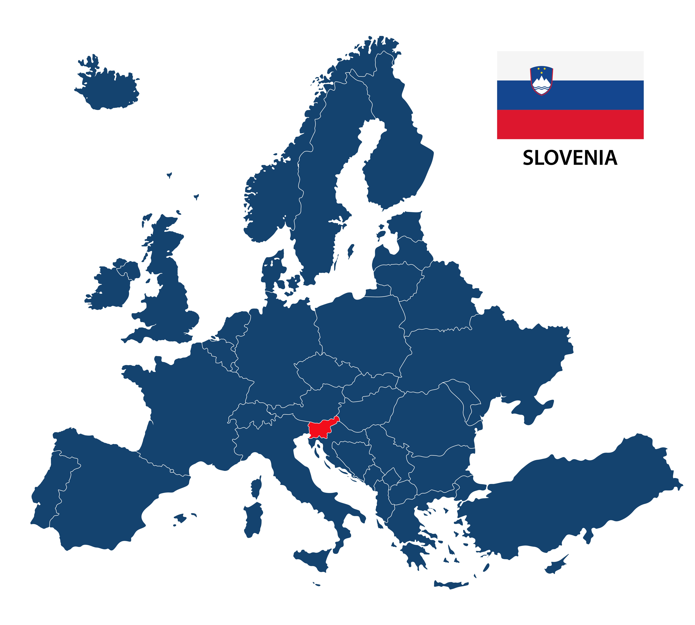

Resembling a fairytale knight's home, Slovenia is home to some of the largest caves in Europe, such as Postonja Jama. These caves are amazingly large and have been in tourisim for nearly 200 years. The area is also home to dragons and castles that abide within these caves.
Slovenia has mountains and fluffy snow in the winter and winter sports are common. Tourism peaks in the summer. People come from all around the world, many tourists coming from Brazil and China. Despite the low-birth rate, more immigrants have been coming over in the past decade from Ukraine due to war conflict. The language family of Ukrainian is close enough to the Slovic languages that it is easy for them to learn.
Languages
Official Language: Slovine (Contempary Yugaslov; ex. Slovenians can understand Serbians easily.)
Other Languages: Italian, Hungarian.
Currency
Euro
Established
1991
Southeastern Europe

Slovenia has a distincly European culture that has elements of the east and the west of the contedent. The west of Slovenia has shares a lot of culture with its Italian neighbor and many people there speak Italian. I was told that the countries have a good relationship and communities from both sides blend together. The farther into the counrty you go, that more it feels like centeral Europe instead. This can be seen in the architure and more snow, as well as other grociery store chains common in Germanic and Slovic countries.
Slovenia has been considered a sovern state (from Yugaslovia) only 35 years and quickly joined the European Union. A medevil fantasyland, many castles and dragons souround the area. The baby dragon is an animal that is native to Slovenia's caves. Postojna Jama is home to Prejama Castle, which was built into the cave to create a unique defence from enimies. Cave tourism began in the 1800s and quickly utilized new technology and electric lightbulbs. This is when the caves actually started to be explored. When the country struggled in the 20th century due to the wars, this tourism helped the city of Postojna finacially. By the 1990s, Slovenia and it's neighbors beagan to break away from the "Iron Curtain". Today the country is considered very developed with a stable economy.